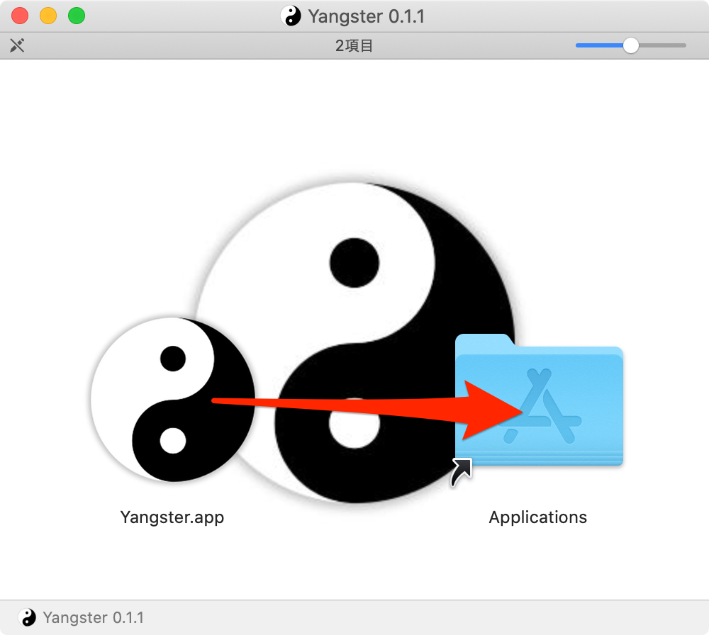
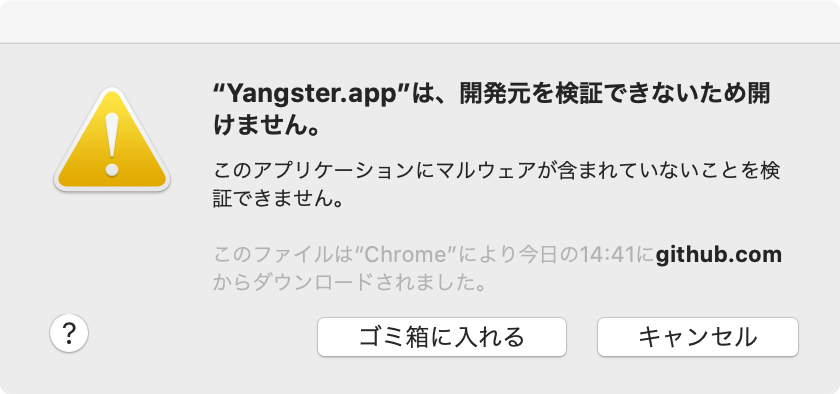

Theia デスクトップ版
Theia デスクトップ版とはなにか？ですが、デスクトップ版の意味として、ネイティブなデスクトップ・アプリケーションが思い浮かぶと思います。ですので、その候補を挙げます。
2020.04.13時点でのデスクトップ版の状況は芳しくありません。 ひとまずhttps://github.com/eclipse-theia/theia のGetting Startedに記載のある候補を当たってみることにします。
| No. | 候補 | URL |
|---|---|---|
| 1 | Run Theia in Docker | https://github.com/theia-ide/theia-apps#theia-docker |
| 2 | Package a desktop Theia application with Electron | https://github.com/theia-ide/yangster-electron |
Theia デスクトップ版 候補その1
「Run Theia in Docker」ってその名の通りDockerであって、デスクトップ版アプリっていうのは違うだろ？ そうなんですが、行ってみるとTheia Desktopの文字があるんです。
ですが…
はい、そのうち登場するかも知れないので、本稿の勝手な使命としてあげておきました。
Theia デスクトップ版 候補その2
つづいてリンク名称的には本命のPackage a desktop Theia application with Electronです。 ですが、こちらも残念ながら「Latest commitea4c3d5on 13 Mar 2018」とあるとおり、期待できません。
自分でビルドする以外に、以下のリンクからビルド済みのパッケージを入手可能です。 ですがよい子の皆さんは、この記事を見るだけにして、真似はしない方が良いでしょう。
https://github.com/theia-ide/yangster-electron/releases/tag/v0.1.1
Mac版が、Yangster-0.1.1.dmg Windows版が、Yangster-Installer-0.1.1.exe
どっちの環境も試せますが、Mac版で試しました。
ダウンロードしたdmgファイルを起動すると、以下のウインドウが表示されるので、いつもの調子でインストールします。

警告される… (これ以前も無保証ですが、この先はもっと無保証です)

設定のセキュリティとプライバシーを開き、一般タブのこのまま開くをクリックします。

また確認されるので、開くをクリックします。

無味乾燥な、ウインドウが表示されたら成功です。

ま、選択肢にならないことを念のため確認したまでです。
USING THEIA
では、他にはないのか？と。
公式ドキュメントに戻ってみました。こちらです。
Build your own IDEで、自分用のビルドをローカルで行うというもので、Electronの仕組みはChromium+Node.js=exeという構図なのできっとそれをバラした状態ですね。
ま、バラしたとは言え、動きとしてはローカルで動いているのでかろうじて、本稿の目的というかなんというか、かすってるかなと。
さて、この先は実際にはやっていませんが、大まかに流れを見ていきます。
1. Node.jsのv10が必要ということでインストールします。
2. yarnも必要ということでインストールします。
3. ディレクトリを作成し、package.jsonを作成します。
4. 中身は言われるがママにコピペして、、、
5. って思ったら、プラグイン分を含めると次のpackage.jsonをコピペですね。
6. そして`yarn`を実行し、`yarn theia build`を実行
7. yarn startで起動。
という流れです。
でもこれって、最初にあげたDockerの成果を享受した方が楽ですよね。。。 でも、私はDocker使っていないので、この記事はこの辺で。
まとめ
デスクトップ版もある！って書いてありますが、現時点では宣伝文句の一つで、手元のVS Codeに足下にも及びません。苦労して手に入れる理由も見当たりません。
メリットはやはりクラウド上で稼働するGitpodですね。 ただ、これも日頃ローカルのVSCodeでゴリゴリ開発している人にどれだけメリットがあるかというと、限られているかも知れません。
comments powered by Disqus